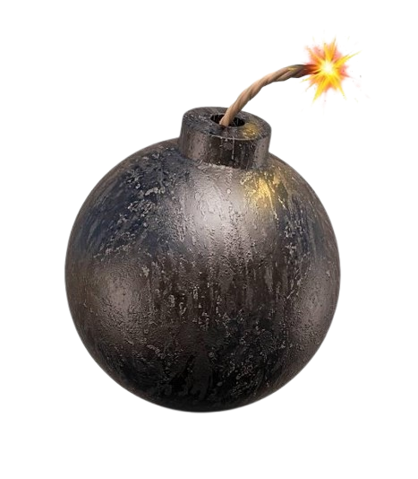

CV
Umiejętności informatyczne:
Podczas edukacji w szkole podstawowej nabyłem umiejętności jak posługiwać się programem
Tinkercad (włącznie z praktycznym drukowaniem drukarką 3D), DroneBlocks
(mobilna aplikacja do ustalania trasy lotu drona), Gimp i Scratch.
Czego bym chciał się nauczyć:
Bardzo chętnie nauczę się posługiwać programami t.j. Python, Java.
Chciałbym również zapoznać się z aplikacją do obróbki zdjęć i video.
Ciekawi mnie również informatyka techniczna (elektryka, budowa komputera itp.).
Plany na przyszłość:
Moją przyszłość chciałbym powiązać z inżynierią i informatyką, najchętniej konstruować np. urządzenia elektryczne.
Od zawsze interesował mnie ten kierunek; włożę całą swoją energię, aby spełnić to marzenie.
Imię: Kacper B.